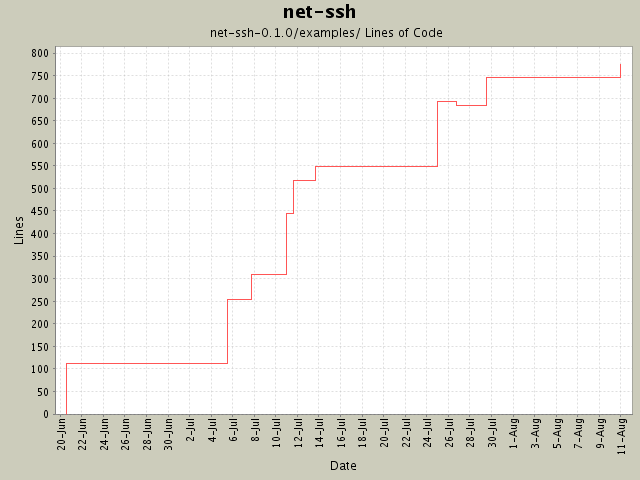

Summary Period: 2004-06-20 to 2004-08-11
[root]/net-ssh-0.1.0/examples

Total Lines Of Code:
775 (2005-01-07 15:12)
| Author | Changes | Lines of Code | Lines per Change |
|---|---|---|---|
| minam | 24 (100.0%) | 809 (100.0%) | 33.7 |
Added more SFTP protocol coverage, including support for opening and manipulating
files. Basic buffered file IO is supported as well.
38 lines of code changed in:
Modified demo to reflect existence of new kex algorithm (group-exchange).
4 lines of code changed in:
Gabriele Renzi's suggestion of an open-uri interface for SFTP. This
required some new methods be added to the SFTP interfaces (attributes,
and size). Also modified the SFTP 'get' interfaces to support the specification
of a 'chunk size' and a progress callback.
63 lines of code changed in:
Changed 'write' to 'puts', and removed explicit newline appends.
2 lines of code changed in:
Brought the examples into line so they no longer specify the optional
parameter to open_channel.
4 lines of code changed in:
Support for interactively executing processes on a remote machine.
145 lines of code changed in:
Added "remove" and "rename" operations to the SFTP classes.
33 lines of code changed in:
Added kex_algorithm property to Transport::Session, and added demo for setting
desired SSH algorithms.
74 lines of code changed in:
Remote-to-local forwarding supported. Forwarding now uses a handler object
instead of a single callback, for better callback type granularity.
137 lines of code changed in:
Example program demonstrating the local-to-remote port-forwarding capabilities
of Net::SSH.
55 lines of code changed in:
Added tests of get_file and put_file.
14 lines of code changed in:
Added comments. Changed SFTP::Simple so that the synchronous operations only
return the data that was requested, and the status is made a property of
the Simple object itself.
127 lines of code changed in:
Initial revision
113 lines of code changed in:
Generated by StatCVS 0.2.3